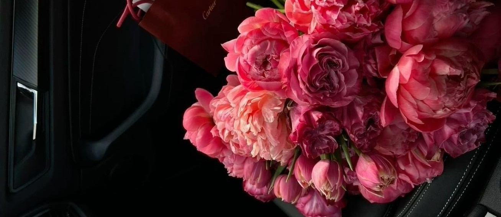
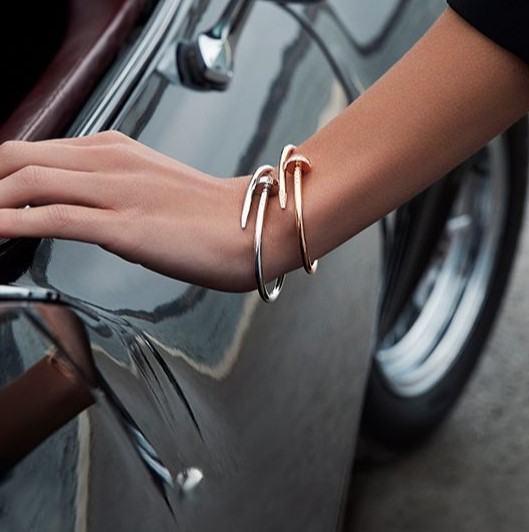
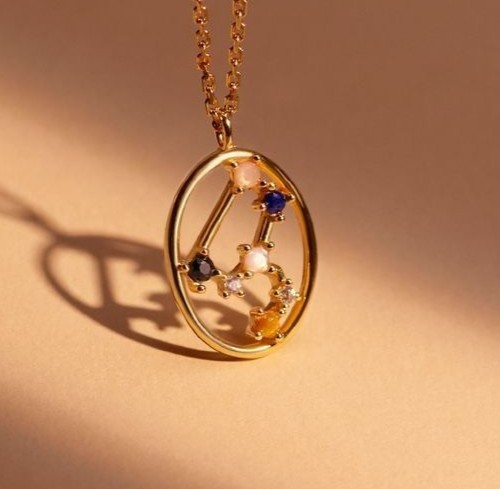
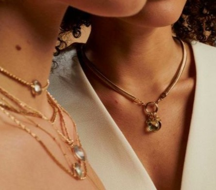
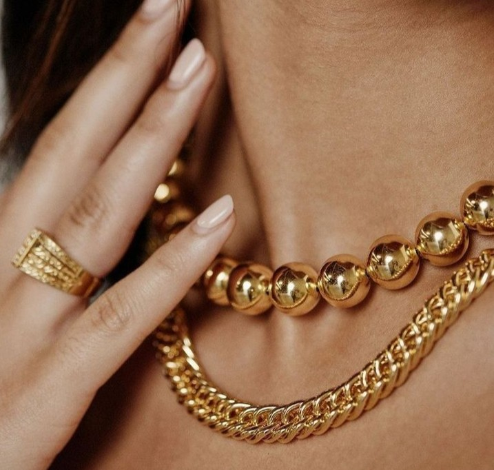
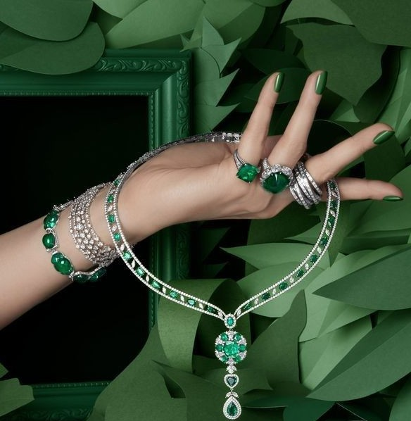
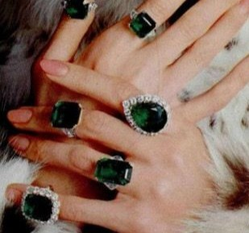

Joyeria Pucca
PUCCA

En joyeria pucca cada pieza es una obra de arte única, diseñada para capturar la esencia de la elegancia y la exclusividad. Nos especializamos en crear joyas que no solo adornan, sino que cuentan historias y celebran momentos inolvidables.
- Exclusividad y Distinción En Pucca, entendemos que cada cliente es único, y por eso ofrecemos joyas que reflejan esa singularidad. Nuestras piezas exclusivas están diseñadas para aquellos que buscan algo más que una joya, buscan una expresión de su estilo y personalidad.
- Compromiso con la Calidad Nos enorgullece ofrecer joyas de la más alta calidad, utilizando solo los materiales más finos y las técnicas de fabricación más avanzadas. Cada joya de Pucca es una inversión en belleza y durabilidad, destinada a ser apreciada por generaciones.
materiales
| # | Material | Info |
|---|---|---|
| 1 | Oro: | En varios colores como amarillo, blanco y rosa. |
| 2 | Plata: | Un metal básico en la joyería, conocido por su accesibilidad y versatilidad. |
| 3 | Platino: | Un metal más raro y costoso, valorado por su durabilidad. |
| 4 | Diamantes: | Conocidos por su dureza y brillo. |
| 5 | Rubíes: | Valorados por su color rojo intenso. |
| 6 | Zafiros: | Disponibles en una variedad de colores, siendo el azul el más conocido. |
Acero Inoxidable: Utilizado en joyería moderna y relojes.
Latón y Bronce: Utilizados en joyería de moda y diseño.
Perlas: Cultivadas y naturales.
Coral y Marfil: Aunque su uso está regulado debido a preocupaciones de conservación.
Ámbar: Resina fósil utilizada como gema.
Circonia Cúbica: Una alternativa sintética a los diamantes.
Cristales de Swarovski: Utilizados en joyas de moda.
Resinas, plásticos y maderas: En joyería contemporánea y de diseño.
Elaboración artesanal
elaboración artesanal de joyas es un proceso fascinante que combina tradición, creatividad y destreza manual. Estos son los pasos más comunes en la creación de joyas artesanales:
Diseño
Concepto y Boceto: El proceso comienza con una idea o inspiración. Los artesanos crean bocetos para visualizar el diseño de la joya. Selección de Materiales: Dependiendo del diseño, se eligen los materiales apropiados, como metales, piedras preciosas, perlas, o materiales orgánicos.
Preparación
Fundición de Metales: Los metales preciosos como el oro, la plata o el bronce, se funden y se convierten en lingotes que luego se laminan en la forma deseada. Corte de Piedras: Las piedras preciosas se cortan y pulen para resaltar su brillo y belleza.
Fabricación
Modelado y Forjado: En esta etapa se crean las formas básicas de la joya. Los metales se forjan y se sueldan para obtener la estructura deseada. Engaste: Las piedras se colocan cuidadosamente en el diseño de metal. Esto requiere precisión para asegurar que las piedras estén bien aseguradas. Texturizado y Detalles: Se añaden texturas y detalles decorativos mediante técnicas como el grabado, el repujado o la filigrana.
Acabado
Pulido: La joya se pule para obtener un acabado suave y brillante. Revisión y Ajuste: Se revisa la joya para asegurarse de que todos los componentes estén firmemente sujetos y que el diseño sea coherente.
Toque Final
Patinado: Algunas piezas pueden recibir un color adicional mediante pátinas o recubrimientos. Montaje Final: Si la joya tiene varias partes, estas se ensamblan para completar la pieza.
Diseño
Concepto y Boceto: El proceso comienza con una idea o inspiración. Los artesanos crean bocetos para visualizar el diseño de la joya. Selección de Materiales: Dependiendo del diseño, se eligen los materiales apropiados, como metales, piedras preciosas, perlas, o materiales orgánicos.
Preparación
Fundición de Metales: Los metales preciosos como el oro, la plata o el bronce, se funden y se convierten en lingotes que luego se laminan en la forma deseada. Corte de Piedras: Las piedras preciosas se cortan y pulen para resaltar su brillo y belleza.
Fabricación
Modelado y Forjado: En esta etapa se crean las formas básicas de la joya. Los metales se forjan y se sueldan para obtener la estructura deseada. Engaste: Las piedras se colocan cuidadosamente en el diseño de metal. Esto requiere precisión para asegurar que las piedras estén bien aseguradas. Texturizado y Detalles: Se añaden texturas y detalles decorativos mediante técnicas como el grabado, el repujado o la filigrana.
Acabado
Pulido: La joya se pule para obtener un acabado suave y brillante. Revisión y Ajuste: Se revisa la joya para asegurarse de que todos los componentes estén firmemente sujetos y que el diseño sea coherente.
Toque Final
Patinado: Algunas piezas pueden recibir un color adicional mediante pátinas o recubrimientos. Montaje Final: Si la joya tiene varias partes, estas se ensamblan para completar la pieza.




